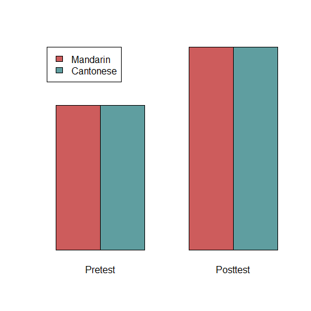

If you understand what the various effects are, you should be able to draw what they look like. For example, the below
drawing shows a situation in which there is a main effect of Test (pretest vs. posttest), no main effect of Group
(Mandarin vs. Cantonese) and no interaction:

This is just one possible situation that could occur in a factorial ANOVA. There are many others (main effects in both
factors, but no interaction; main effect in one factor, an interaction, but no main effect in the other factor; no
main effects, but an interaction; no main effects and no interaction; etc.). In situations where there is an
interaction, there are a lot of possible kinds of interactions that can appear (the simple effect of pre-post for
Mandarin speakers might be bigger than it is for Cantonese speakers, or might be smaller, or might even be in the
opposite direction).
Draw at least three possible patterns of
effects, like what I drew above. Make sure your graphs have labels (you can use the same labels as mine, or you can
make up another set of factors that is more related to your own research). If you aren't confident using software
like R/Excel/etc., it's ok to just draw your graphs by hand and take photos of them. For each graph, you should put a
title or caption describing what situation it is (e.g., my graph above would be captioned "Main effect of Test, no
main effect of Group, and no interaction").
Remember that in the first task of this module, I said that I almost never use ANOVA, because I can accomplish the same
things with other tests. That also applies to factorial ANOVA. If I'm interested in looking at a main effect, or an
interaction, or whatever, there are other ways to do it.
But this also depends on the nature of the data; it will work differently if I have independent data or
paired (dependent, repeated measures) data. (Review the "Introduction to inferential statistics and t-tests
module" if you don't remember what these terms mean.)
Imagine that I have a factorial study design with four groups (conditions), and they're all paired. In other words, the
four measurements from the four conditions come from the same person; I have no independent groups. For example,
maybe I gave people a syntax pretest and posttest, and also a phonetics pretest and posttest, so each person took
four tests. Here's some fake data from a situation like this:
| Participant |
Syntax pretest |
Syntax posttest |
Phonetics pretest |
Phonetics posttest |
| ptp001 | 70 | 85 | 82 | 79 |
| ptp002 | 53 | 80 | 37 | 50 |
| ptp003 | 91 | 94 | 78 | 77 |
| ptp004 | 60 | 58 | 61 | 42 |
| ptp005 | 69 | 81 | 55 | 62 |
If I wanted to, I could test these in an ANOVA. (Technically I'd need a repeated-measures ANOVA. Just like t-tests include
independent t-tests and dependent t-tests, ANOVA has different versions—normal ANOVA vs. repeated-measures ANOVA—depending
on whether your data come from independent groups or paired groups.)
But I find it easier to use t-tests. Recall that a design like this includes two main effects, an interaction, and a bunch of
simple effects. Imagine I want to see the main effect of test (i.e., compare the overall posttest scores to the overall pretest
scores). That just means I want to see if the average of the syntax and phonetics post-tests is higher than the
average of the syntax and phonetics pre-tests. Person #1 got 85 points on their syntax post-test and 79 points on their
phonetics post-test, so their average post-test score is 82 (halfway between 85 and 79). I could calculate the average
scores for each person's post-test and each person's pre-test, to get a table like the following:
| Participant |
Pretest |
Posttest |
| ptp001 | 76 | 82 |
| ptp002 | 45 | 65 |
| ptp003 | 84.5 | 85.5 |
| ptp004 | 60.5 | 50 |
| ptp005 | 62 | 71.5 |
Now that it's two columns of data, it would be easy to do as a t-test. And the result you get for this
t-test will be mathematically equivalent to what you get for the main effect of pre vs. post in a
repeated-measures ANOVA.
Likewise, you can do the exact same thing to examine the syntax vs. phonetics scores: I can calculate each person's average
syntax score (the average of their syntax pre-test and their syntax post-test) and average phonetics score, and compare them in a t-test. I won't write out the table here, but you should be able to figure it out.
Finally, I can also test interactions like this. In this kind of design an interaction would just mean that the
pre-vs.-post difference for syntax is not the same as the pre-vs.-post difference for phonetics. (Or, alternatively,
the syntax-phonetics difference at the pretest is not the same as the syntax-phonetics difference at the posttest;
these are different but mathematically equivalent ways of expressing the same interaction.) So, again, I can turn
this into a t-test. For each person, I can calculate their syntax improvement score (syntax post-test minus
syntax pre-test, i.e., how much they improved on syntax) and their phonetics improvement score. Participant #1 went
from a syntax pre-test of 70 to a syntax post-test of 85, i.e., this participant's syntax score improved by 15
points. Following this logic, we can make a table like this:
| Participant |
Syntax improvement |
Phonetics improvement |
| ptp001 | 15 | -3 |
| ptp002 | 27 | 13 |
| ptp003 | 3 | -1 |
| ptp004 | -2 | -19 |
| ptp005 | 12 | 7 |
Once again, I can do a simple t-test to see if people improved in syntax more than they improved in phonetics.
If their improvement in syntax is different from their improvement in phonetics, that's an interaction. (A rule of
thumb to keep in mind: something that can be explained by just referring to one variable is a main effect, and
something that can only be explained by referring to both variables is an interaction. "People scored higher on the
post-test than the pre-test" is a main effect, because I only mentioned the pre-vs.-post variable. "The amount that
people improved from pretest to posttest was bigger for syntax than it was for phonetics" is an interaction, because
I had to mention both the pre-vs.-post variable and the syntax-vs.-phonetics variable.)
All the above discussion was illustrating how I could turn an ANOVA into simpler t-tests
if the conditions are all paired/dependent/repeated-measure
(i.e., if the measurements come from the same person).
This strategy is not possible if I have independent groups (e.g., HK jockeys vs. Canadian jockeys vs. HK basketball
players vs. Canadian basketball players; these are four separate groups of people [assuming that there's no
multitalented person in the sample who's both a basketball player and a jockey). It's still true that I can analyze
this without an ANOVA (I could do it using regression, which is a more complicated method which will be discussed in
another module), but I can't turn it into t-tests.
Why not?